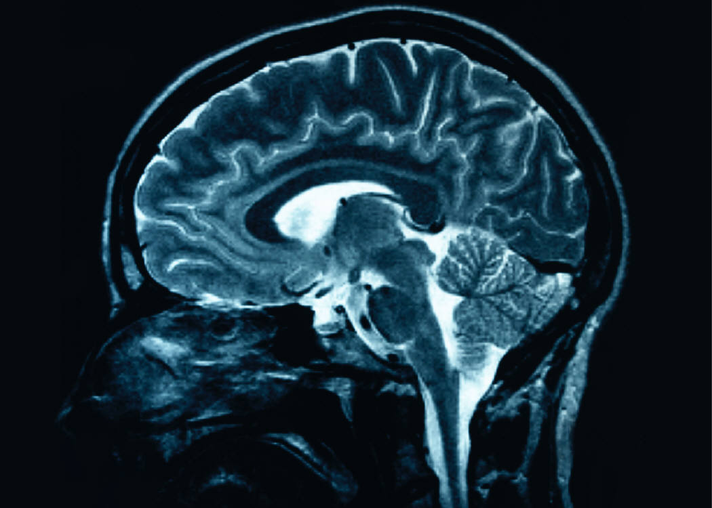

Imaging Alzheimer's
The Future of Alzheimer's Treatments
Kira Xie
Spring 2011

There are notes. Everywhere. They are written on Post-its
and other small scraps of paper, taped down neatly next to every
appliance, every remote control, and every stack of papers. It
looks like a scene out of A Beautiful Mind, but instead of being about
imagined anti-government conspiracies, these notes are simple
instructions: “Close door, then push button to close garage,” or, “Turn
knob to the right then pull”. This was my grandfather’s house
from when he first began suffering from Alzheimer’s disease.
The rest of the family had noticed
something was wrong, but by the time the doctors had settled on
Alzheimer’s disease as a diagnosis, my grandfather’s mind had already
become shrouded in a blanket of oblivion. People often say that
Alzheimer’s is hardest on the family members because the patients grow
increasingly less aware of their own predicament. On the other hand, I
imagine how terrifying those first few years must have been for my
grandfather, whose mind had always been razor sharp, to come to his
bedroom and realize he has no idea how to open the door.
Alzheimer’s Disease (AD) is a disease that
occurs in roughly 15% of people over 85. According to the Center
for Disease Control (CDC), 5.3 million people in America are suffering
from the slow mental degeneration that is Alzheimer’s as we
speak. In today’s age of medical miracles, AD is the only member
of America’s top ten killers that cannot be avoided, stopped, or
slowed, and has actually increased in its mortality rate. One
reason for this is that the disease itself was largely a mystery until
the past decade. Even in diagnosis, it is often difficult to
distinguish between AD, other forms of dementia, or just plain
aging. In its early stages, dementia is referred to as mild
cognitive impairment (MCI), during which patients can still function
but start to experience major deterioration in cognitive ability.
Many believe that treatment at this stage would be the most effective.
Until recently, accuracy of diagnosis at this early stage was
insufficient in providing information other than tests for various
types of cognitive impairment.
In 2002, the first human study was done using
Pittsburgh Compound B (PiB), a radioactive positron emission tomography
(PET) tracer that detects AD. PET is an imaging technique that
uses gamma ray emissions from radioactive decay to reconstruct images
of the brain. Specifically, the tracer PiB binds to protein
plaques called β-amyloid that form on the surface of the brain, and
then radioactive signals can be picked up by a PET scanner to show
where the plaques are located. These plaques are characteristic
of AD pathology, and before PiB-PET scans could only be seen during
post-mortem autopsy.
As a result, the post-mortem autopsy was
also the only time that doctors could definitively diagnose patients
with AD. “[PiB] has been a huge breakthrough in terms of
understanding what the meaning of amyloid is in the brain and in
aging,” says Dr. Gil Rabinovici, a neurologist studying memory and
aging at the University of California, Berkeley. He goes on to
say that PiB also increases “the possibility of making early and
accurate diagnosis of Alzheimer’s.”